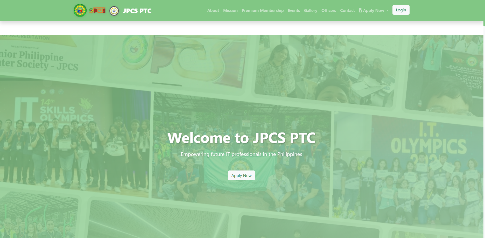

Problem addressed
The organization needs one structured place for its identity, events, officers, membership applications, inquiries, and member access.
Organization & Membership Website
Status: Complete System with Screenshot Demo. A public and member-facing website for the Junior Philippine Computer Society chapter at Pateros Technological College.
The organization needs one structured place for its identity, events, officers, membership applications, inquiries, and member access.
Prospective members, current members, organization officers, students, and school stakeholders.
Visitors discover organization information and events, submit membership or contact forms, and use authenticated member functions where authorized.
The original live address returned 404 during verification. The portfolio therefore exposes screenshots and technical documentation without a misleading live-demo action.
Demo Version Tech Stack
This section describes the technologies used by the accessible portfolio demo.
Static screenshot and project-document content only. No member or application record is stored by the portfolio page.
Semantic navigation and keyboard-accessible case-study links; no membership form is submitted from this demo.
No live organization backend, member authentication, application processing, or database is connected to this screenshot case study.
Complete System Tech Stack
This section describes the complete technical architecture of the full organization system.
The accessible portfolio version is optimized for demonstration and can run without a connected production server. The Complete System Tech Stack section documents the full technical architecture used for the complete business system version.
HTML5, CSS3, JavaScript, Bootstrap, responsive public and member layouts, accessible forms, client-side validation, event and officer components, and mobile compatibility.
PHP with modular controllers and services, server-side validation, membership application processing, content management, event publishing, inquiry handling, and email notifications.
MySQL relational design with users, roles, permissions, members, applications, officers, events, galleries, inquiries, announcements, and audit records; foreign keys, indexes, transactions, migrations, seed data, and backups.
PHP secure sessions, password hashing and reset, email verification, Member and Administrator roles, permission checks, login rate limiting, and secure logout.
JSON endpoints for public content and member functions, email confirmations, membership notifications, calendar export, and PDF membership documents.
CSRF tokens, output escaping, prepared queries, validation, sanitization, authorization checks, HTTPS, secure cookies, environment variables, audit logs, and backup recovery.
Functional, unit, integration, database, membership-workflow, role-permission, responsive, accessibility, end-to-end, and browser compatibility testing.
Apache or Nginx, PHP runtime, MySQL server, SSL, domain and environment configuration, database migrations, file storage, error logging, automated backup, and CI/CD when applicable.
The public portfolio demo runs independently for easy access. Backend and database services are represented under the Complete System Architecture and are not connected to the public demonstration deployment.
Screenshot
